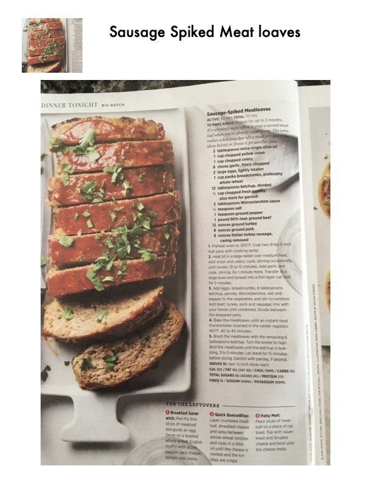

Sausage Spiked Meat loaves

Original cookbook page 33
Ingredients
- 1 cup chopped yellow onion
- 1 cup chopped celery
- 6 cloves garlic, finely chopped
- 2 large eggs, lightly beaten
- 1 cup panko breadcrumbs, preferably
- 12 tablespoons ketchup, divided
- 2 tablespoons Worcestershire sauce
- 1 teaspoon ground pepper
- 1 pound 90%-lean ground beef
- 12 ounces ground turkey
- 8 ounces ground pork
- 8 ounces Italian turkey sausage,
Instructions
- Preheat oven to 350°F. Coat two 9-by-5-inch loaf pans with cooking spray.
- Heat oil in a large skillet over medium heat. Add onion and celery; cook, stirring occasionally, until tender, 10 to 12 minutes. Add garlic and cook, stirring, for 1 minute more. Transfer ta large bow! and spread into a thin layer. Let ool for 5 minutes. '
- Add eggs, breadcrumbs, 6 tablespoons ketchup, parsley, Worcestershire, salt and pepper to the vegetables and stir to combine. Add beef, turkey, pork and sausage; mix with your hands until combined. Divide between the prepared pans.
- Bake the meatioaves until an instant-read thermometer inserted in the center registers 160°F, 40 to 45 minutes.
- Brush the meatloaves with the remaining 6 tablespoons ketchup, Turn the broiler to high. Broil the meatloaves until the ketchup is bub- bling, 3 to 5 minutes. Let stand for 15 minutes before slicing. Garnish with parsley, if desired.
Recipe #33 from collection